01
OpenAI 推出 ChatGPT Wallet，支持经批准的智能体购买
OpenAI 推出 ChatGPT Wallet，使 ChatGPT Work、Codex 和 dots 中的智能体能在用户批准后完成购买，并称会保留现有银行卡保护机制。这标志着智能体从提供购物建议走向实际交易执行。采集到的公告没有提供详细价格、地区覆盖或商户范围。
每天一次，过滤 AI 噪音
OpenAI 推出 ChatGPT Wallet，使 ChatGPT Work、Codex 和 dots 中的智能体能在用户批准后完成购买，并称会保留现有银行卡保护机制。这标志着智能体从提供购物建议走向实际交易执行。采集到的公告没有提供详细价格、地区覆盖或商户范围。

SGLang 宣布为 Inkling 2 Small 开放权重版本提供首日支持，包括通过 SGLang 进行推理服务，以及通过 Miles 进行强化学习。这将模型发布与部署、训练工具连接起来。采集博客摘要确认这两条支持路径，但未提供吞吐量、硬件要求或强化学习对比结果。
Andreessen Horowitz 发布面向 AI 能力持续增强时代的关键基础设施网络防御方案，摘要强调通过公私合作保护美国基础设施。这是有关机构如何应对更快网络行动的政策讨论。它属于已发表的建议，并不意味着政府已采纳、法规已实施或安全成效已获独立证实。

Wired 报道，英伟达员工正请愿要求黄仁勋回归。这是本次采集的 Hacker News 中讨论最热烈的 AI 行业新闻，获得739分和599条评论。请愿体现员工反应，并不代表管理层已决定逆转人事变动；其影响涉及市场对关键 AI 算力供应商的信心。
Claude 官方状态事件报告 claude.ai、Claude Code 和 platform.claude.com 错误增加，涉及交互式助手与程序化工作流。本次 Hacker News 快照记录404分、339条评论。采集条目未确定根因、持续时间或服务是否已完全恢复，依赖这些服务的团队应关注官方状态。
Hacker News 收录的报道指出，礼来 CEO 对 Anthropic 的 Dario Amodei 的医疗主张提出质疑，快照记录237分和298条评论。这体现制药行业对 AI 医疗预期的审视。采集内容不包含完整对话，因此只能确认争论，不能据此裁定具体临床主张或时间表。
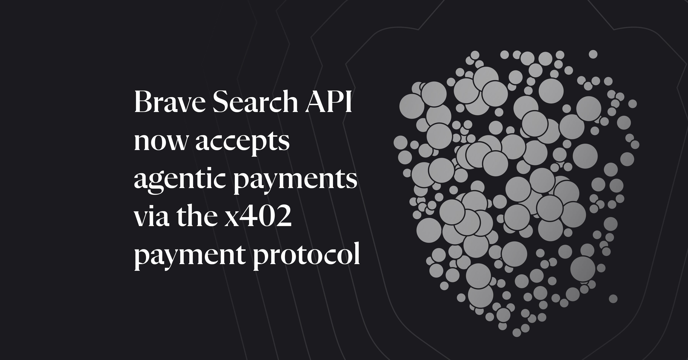
Brave 宣布 Search API 接受通过 x402 协议进行的智能体支付。官方公告在本次 Hacker News 快照获得208分和116条评论。搜索是自主工作流的常见依赖，因此支付接口影响智能体获取外部服务的方式。采集条目未说明交易价格、资金安排或实际采用规模。
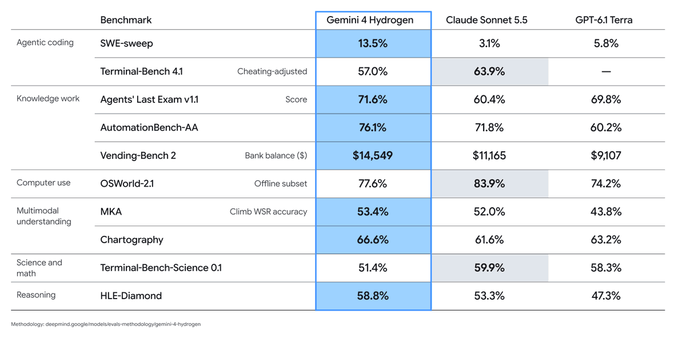
Google DeepMind 发布面向快速编程、多模态合成和日常工作流的 Gemini 4 Hydrogen，称任务完成速度为 Gemini 3.8 Flash 的2.5倍，并在 Artificial Analysis 智能指数上超过 Argon。这些是厂商公布的比较，本次采集未独立复测。该发布强调智能体工作流中速度与能力同样重要。

Anthropic 宣布 Claude Meetings，可加入团队视频会议，在讨论进行时创建文档、白板等成果。该功能开始面向 Team 和 Enterprise 套餐进行 beta 推送，是采集到的 X 产品公告中获赞最突出的条目。其重点是会议中协作产出，公告描述的是逐步测试开放，而非全面可用。

Google 向 Google AI Ultra 订阅者推出 Antigravity Orchestrator，使多个模型可在同一会话内协作。公告描述由 Carbon 制定计划，再交给快速执行模型处理任务。该设计将规划与执行分工；采集帖子未提供独立的成本或任务完成率测量。

Anthropic 宣布自托管 Claude Managed Agents 进入私测。客户可在自有云或本地托管智能体运行框架、沙箱和会话历史，并选择 Claude 请求的发送位置。这为企业部署提供基础设施控制；公告并未表示 Claude 模型权重可供本地托管。
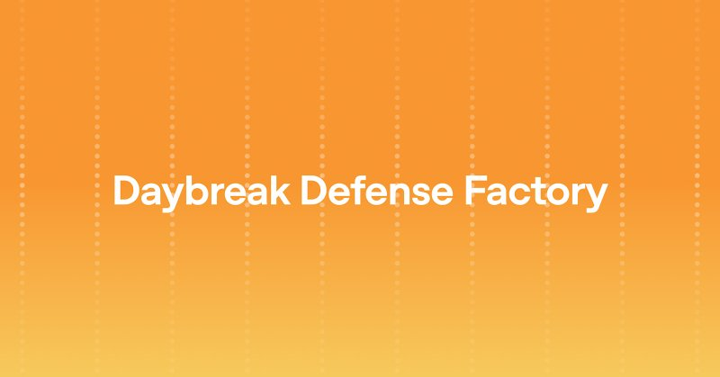
Greg Brockman 宣布 Daybreak Defense Factory 和 Daybreak Red Team 两款网络安全产品，称其有助于企业运用前沿网络安全能力。公告体现从能力展示走向实际安全工作的产品化方向，但采集帖子未说明全面开放时间、价格、实测效果或支持操作的具体范围。
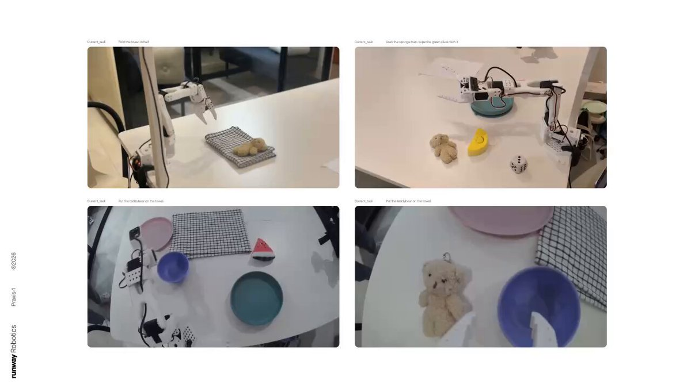
Runway 宣布 Praxis-1 已支持 SO-101 机器人，可使用 NVFP4 在单张 RTX 5090 上运行，并提供检查点与安装说明。公司提到 LeRobot 社区贡献的数千个数据集。这是面向可获取硬件的具体部署进展，但帖子未给出跨环境或不同操作任务的成功率。

Google DeepMind 宣布发布 WeatherNext 3 背后的基础数据集 PARDIG 与 SatWeave，旨在帮助研究者与开发者基于实时大气观测构建气候应用。基础数据开放有助于复现和扩展预测系统；采集公告未列出许可细则、数据规模或独立验证的预测提升。
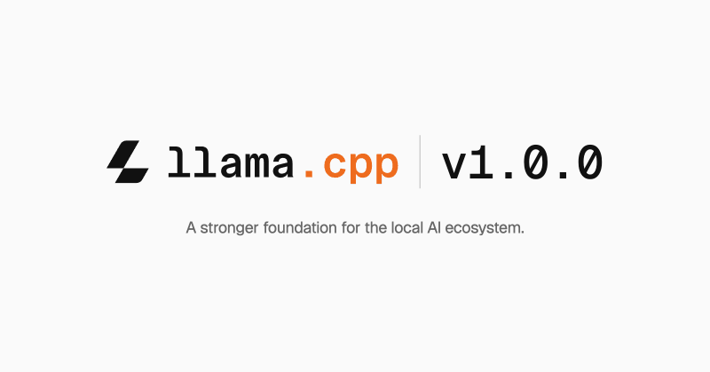
Hugging Face 的 Thomas Wolf 提到 llama.cpp 已发布1.0.0版本，并将其视为开源库的重要里程碑。这与关注本地语言模型运行生态的开发者相关。采集帖子并非更新日志，没有说明兼容性保证、性能变化或迁移要求，具体升级细节需查阅项目发布资料。
Runway 宣布上线 Seedance 2.5 Flash，称其可更快速、低成本地生成视频，为现有创作工作流增加模型选择。采集公告未量化速度提升，也未提供价格表，因此无法据此计算实际节省。该更新与其他平台展示的原生4K Seedance 功能有所区别。
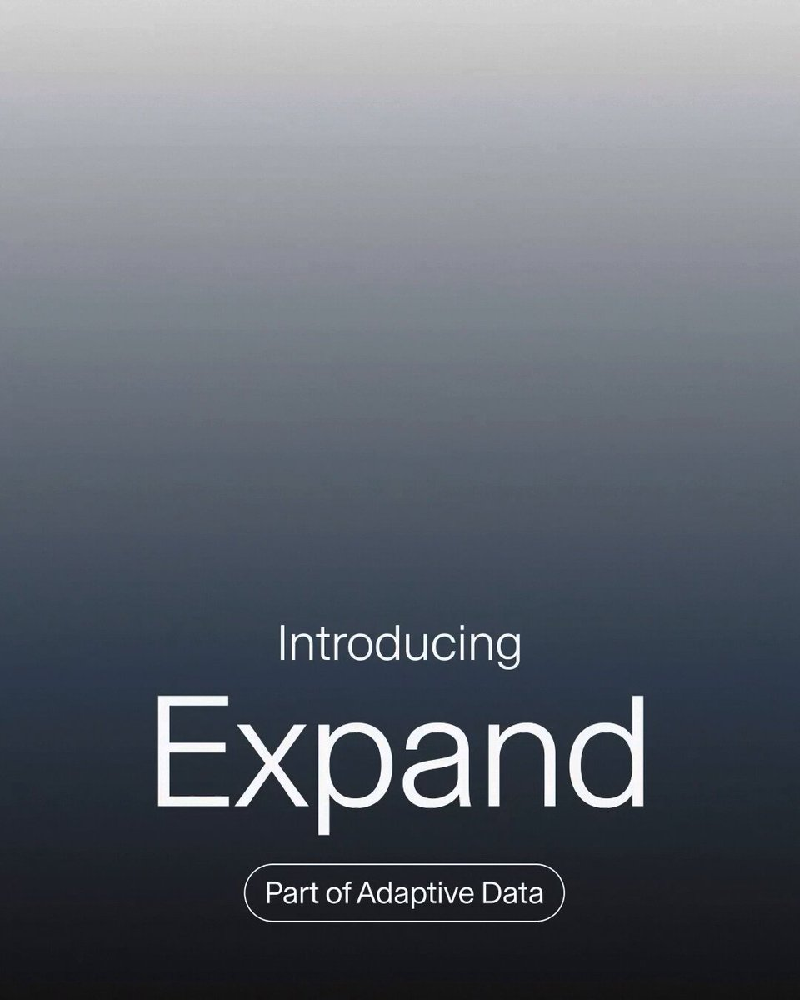
Sara Hooker 介绍 Adaption 的 Expand，可按原始示例的主题与领域扩展训练数据，而非简单补充通用材料。她称可在数小时内从20个样本扩展至10万个数据点。该主张强调面向目标的合成数据，但采集帖子未提供独立的数据质量、多样性或下游模型效果评估。
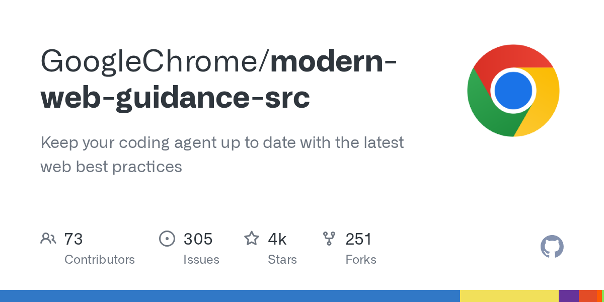
GoogleChrome 的 modern-web-guidance-src 仓库旨在让编程智能体掌握最新 Web 开发最佳实践。本次 GitHub 候选记录其使用 TypeScript，拥有4435颗星。项目针对智能体知识可能滞后于平台规范的问题；采集元数据未证明生成应用的质量提升，也未说明对各类智能体的集成覆盖。
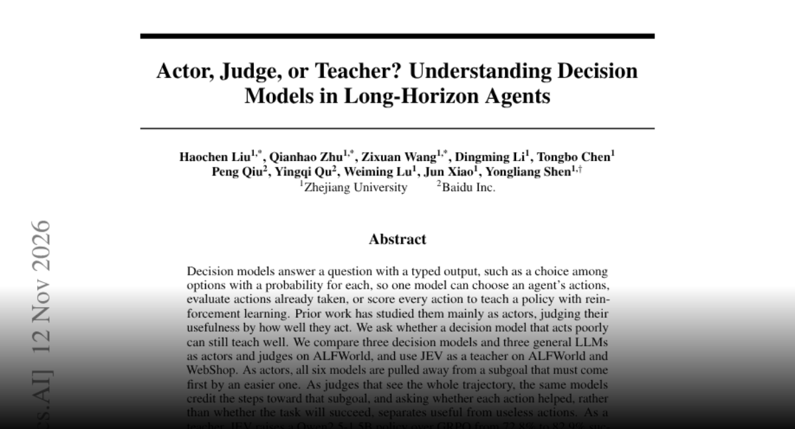
研究区分决策模型作为行动者、评判者和强化学习教师的能力。作者发现，即使模型行动选择不佳，看到完整轨迹后仍可识别有效动作。使用 JEV 教学后，Qwen2.5-1.5B 在 ALFWorld 的成功率从72.8%升至82.9%，在 WebShop 从56.8%升至71.4%。这说明监督质量应与行动能力分别评估。
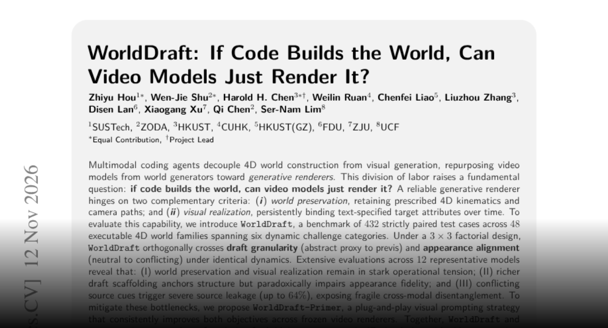
WorldDraft 将视频模型视为由代码定义世界的渲染器，以48类可执行世界中的432组配对案例检验运动、相机轨迹与外观控制。作者评估12个模型，发现结构保真与外观实现存在冲突，冲突线索下源内容泄漏最高达64%。提出的 WorldDraft-Primer 视觉提示方法改善了两类目标。
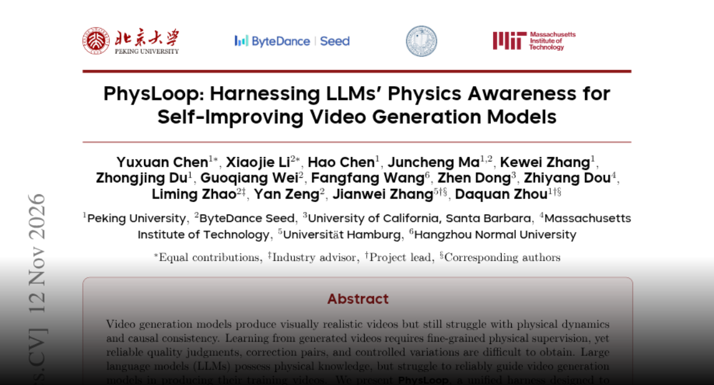
PhysLoop 在视频生成、筛选和修正过程中约束语言模型，尝试将物理知识转化为更一致的训练视频和推理时修复。作者发布10万段视频、生成工具及生成与修复评估集，并使用 Physics-IQ Verified 检验物理行为。其重点是监督与反馈质量，而非将视觉逼真等同于物理正确。
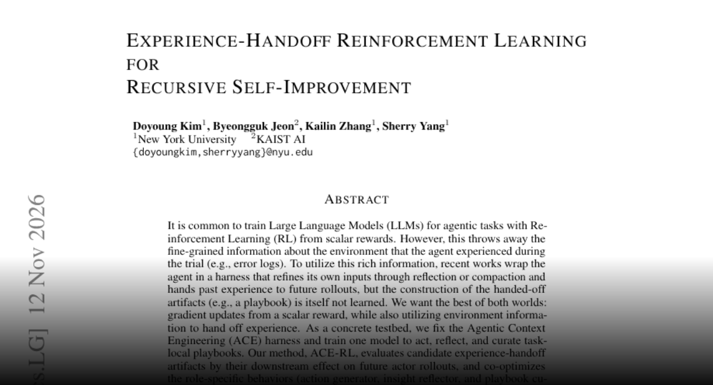
Experience-Handoff Reinforcement Learning 不仅优化行动，还训练智能体为后续尝试编写更有效的经验材料。在固定的 Agentic Context Engineering 框架中，同一模型负责行动、反思和整理任务手册，依据其对未来表现的影响评估手册。作者报告保留测试集成绩优于基线，提示记忆构建本身也可成为学习目标。
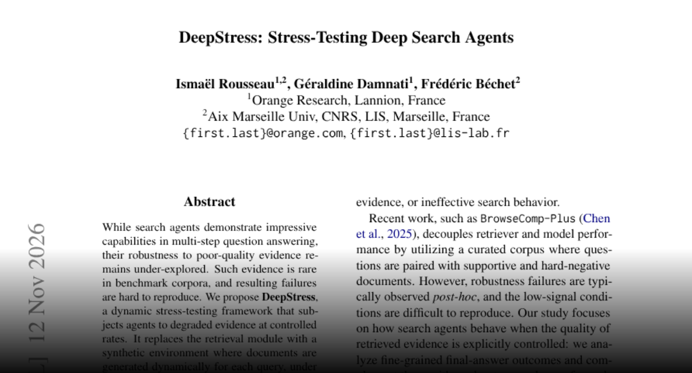
DeepStress 用可控的合成检索环境测试搜索智能体，分别调整文档可信度、相关性与事实正确性，并评估12个系统。作者发现部分开放权重智能体面对明显可信度警告仍自信回答，且错误检索文档下仍可凭参数知识回答不少问题。新指标同时考虑谨慎行为和计算成本。
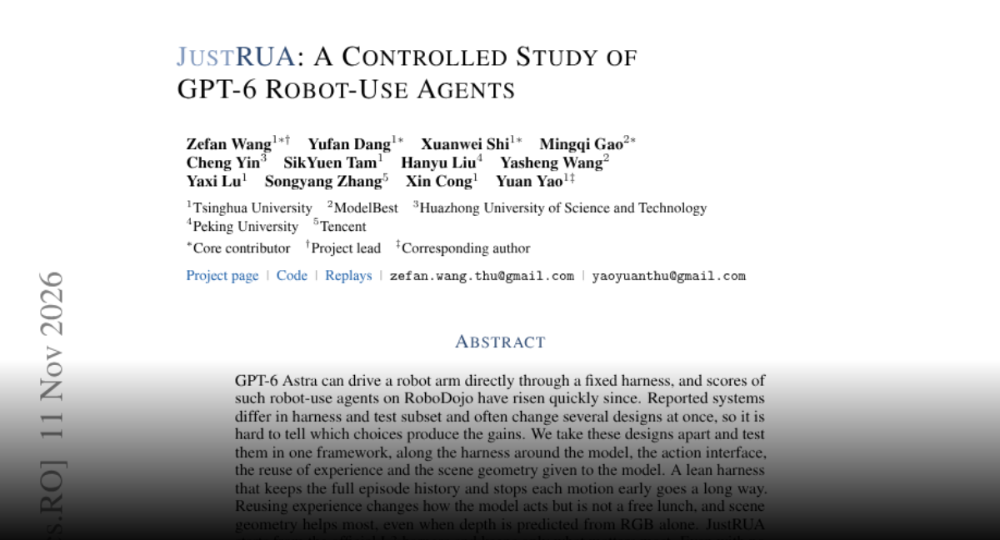
JustRUA 在统一框架中研究 GPT-6 Astra 机器人智能体，拆分运行框架、动作接口、经验复用和场景几何的影响。作者发现完整历史与提前停止动作有帮助，场景几何收益最大。简化框架无需学习策略或任务特定调优，即将 RoboDojo 仿真得分从29.7提高到50.3；该结果不能直接代表真实部署表现。
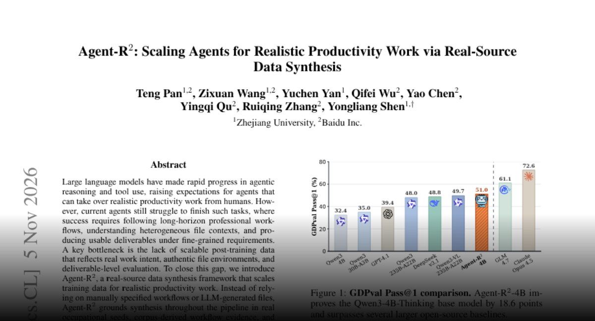
Agent-R² 从职业需求、工作流证据与真实网络文件合成生产力任务，并以细粒度标准评估交付物。作者从1万个候选提炼4000个任务，通过监督学习与强化学习训练4B模型，报告 GDPval 51.0%、OfficeQA 14.8%，超过所比较的 Qwen3-235B 基线。重点是持续理解材料并验证成果，而非仅生成貌似合理的文件。
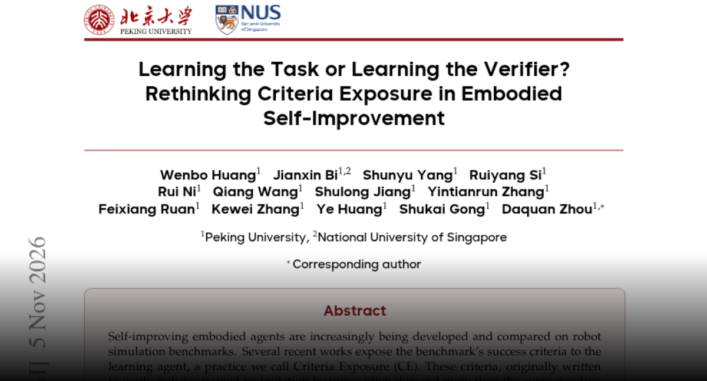
一项对照研究检验向具身智能体公开基准成功判据究竟提升技能，还是帮助迎合验证器。公开判据可迅速提高评分，但在不改变原任务含义的情况下略改判据，优势就消失，技能跨任务迁移也较差。作者提出更忠于指令的判据，强调分数提升不等于能力泛化。
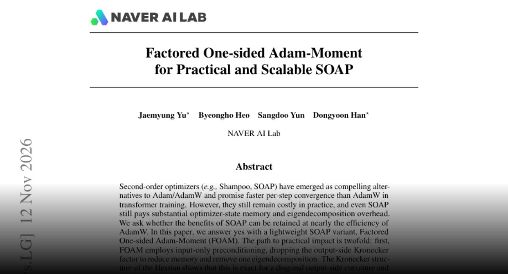
FOAM 是 SOAP 的轻量变体，使用仅输入侧预条件和分解后的二阶矩估计。作者在1.24亿至7.6亿参数语言模型预训练中报告，与 SOAP、Muon 相近的验证损失，约一半的 SOAP 优化器状态内存，以及 Muon 级别的运行时间。更大前沿训练规模上的表现仍需验证。